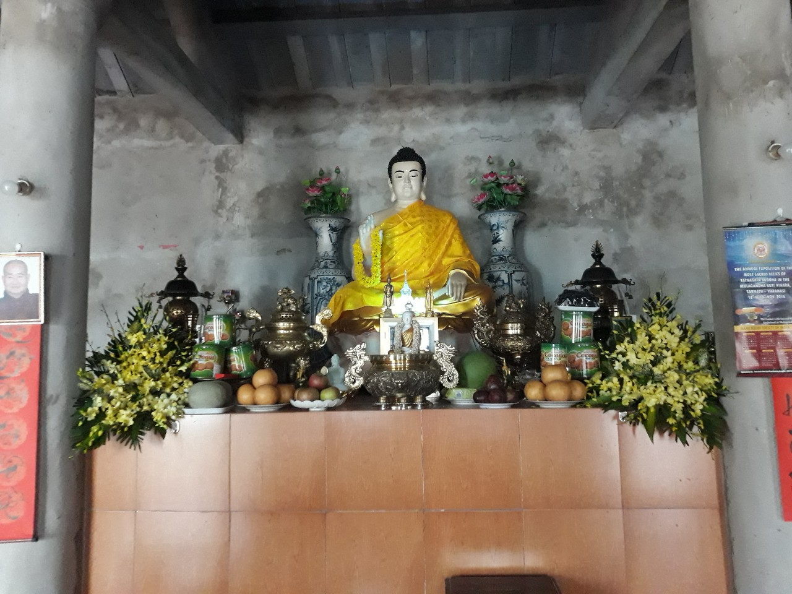

Chùa Phúc Minh
Hiện tại, chùa Phúc Minh là ngôi chùa đầu tiên duy nhất theo hệ phái Theravāda tại Thái Bình. Đây là ngôi chùa làng có từ rất lâu đời được tôn thờ theo tín ngưỡng dân gian. Không ai nhớ chính xác được chùa thành lập vào năm nào, chỉ ước tính khoảng 400 năm về trước. Trong các bức hoành tại chùa có ghi lại vào thời vua Thành Thái năm thứ 11, chùa được trùng tu. Tính theo thời gian dương lịch là vào khoảng năm 1899.
Năm 1940-1947, chùa đã trải qua 2 đời trụ trì. Do thờ thế chiến tranh loạn lạc, từ năm 1947-2010, chùa không có ai trụ trì. Suốt thời gian hơn 60 năm đấy, người dân trong làng thay nhau đến trông coi chùa.
Năm 2010, ĐĐ Thanh Minh về trụ trì chùa. Tháng 03/2010, lễ Bổ nhiệm trụ trì cho đại đức được diễn ra. Lúc bấy giờ, ĐĐ Thanh Mình là vị tỳ khưu theo truyền thống Bắc tông. Tháng 06/2012, duyên lành đến, đại đức sang Myanmar tu học tại các trường thiền. Vào ngày rằm tháng tư năm 2015, với sự thành tín, đại đức chuyển y qua Nam tông theo giới luật Theravāda tại Pa-auk. Đến tháng 02/2016, ĐĐ Thanh Minh trở về Việt Nam. Kể từ đó, chùa định hướng sinh hoạt theo các nghi thức Nam tông và phát triển tu tập thiền.
Diện tích đất ban đầu là 3.400 m2. Khi ĐĐ Thanh Minh về, năm 2010, đã cho khai hoang, mở rộng thêm đất chùa thành 10.000 m2. Ngoài những công trình cổ từ xưa còn giữ lại như chánh điện, miếu Thành hoàng, nhà thờ Thánh mẫu, đại đức đã cho xây dựng thêm trường thiền, nhà thờ tổ, phòng học, dãy tăng xá.
Hiện tại, chùa có 4 tỳ khưu, 1 sa di đang trú ngụ. Vào thứ 7 hàng tuần, quý sư có tổ chức dạy học Phật pháp căn bản cho Phật tử. Nhà chùa chỉ tổ chức lễ Phật đản vào rằm tháng 4, lễ rằm tháng 7 và dâng y Kathina.
Nằm nơi vùng quê thanh tịnh, chùa Phúc Minh thường được các Phật tử ghé đến và ở lại tu tập thiền. Hiện nay, chùa vẫn còn đang trong quá trình xây dựng hoàn thiện để có nơi thuận lợi và khang trang cho việc mở các khóa thiền dài ngày.